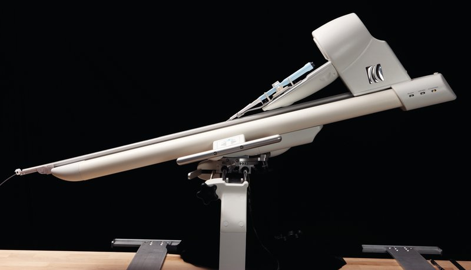

Commercial and clinical-stage systems · amigo_catheterrobotics2008
Amigo
Amigo Remote Catheter System

1 / 5


- Family
- Commercial and clinical-stage systems (commercial)
- Devices
- one standard steerable EP catheter handle (Boston Scientific Blazer or Biosense Webster EZ Steer orientation, docking station specific to the catheter type); no proprietary catheters, introducers or sheaths (catheterrobotics2020_amigo_BROCHURE pp. 3, 7)
- Degrees of freedom
- 3 (insert/withdraw, continuous 360-degree rotation, bidirectional deflection) (brochure p. 5)
- Push
- Other drives
- Twist
- Handle or knob
- Tested up to
- Human
- Sim-to-real
- None found — No simulation-trained controller found for this robot.
Testing
- Highest level
- Human
- What was tested
- IDE trial NCT01139814: 206 patients enrolled at 13 centres, 8 pre-specified locations each, 1,448 locations mapped (brochure p. 1); 181-pt analysis 1,396/1,448 (96%) (PMC7252924 via search, not opened)
- Key numbers
- efficacy 96% (97% adjusted for missing source data; 99% with fluoroscopic confirmation only); responder success (6 of 8 locations) 98%; mean manipulation time 45 s per location, falling significantly by the 3rd case; no major complications, no perforations (brochure p. 1); FDA K122488 (2012): manipulation of diagnostic catheters in RA/RV only, ablation not established (510k.innolitics via search summary)
Mechanism
- Push (translation)
- other: mechanical cradle moving catheter handle
- Twist (rotation)
- cradle
- Device range
- linear translation < 12 +- 2 mm/s; linear resolution < 1.6 mm; rotation resolution < 1.1 deg; rotation max < 0.42 rev/s; articulation resolution 1.0% full scale; articulation max 0.48 rev/s (brochure p. 3)
- Target anatomy
- cardiac EP (mapping)
Sensing and interface
- Force sensing
- none (used with contact-force catheters)
- Leader and haptics
- no: handheld remote controller like a catheter handle (rotation knob, deflection knob, insert and withdraw buttons), up to 100 ft away (brochure p. 5)
- Imaging
- uses existing EP-lab monitors and workstations, no room rebuild (brochure p. 3)
- Sterility
- disposable kit: drapes over the sides and top, nosecone to the introducer, catheter track, docking station and spreader form the sterile interface (brochure p. 7)
Size
- Footprint (mm)
- 1016 x 1372 x 1118 mm (H x W x D; converted by X2 from 40 x 54 x 44 in as listed, whole robot) (brochure p. 3)
- Mass (kg)
- approx. 70 lb = 31.8 kg (converted by X2) (brochure p. 3)
Simulation
- Simulation model
- none found
- Sim-trained controller
- none found
Versions
- Lineage
- single
Sources
- Current and Emerging Robot-Assisted Endovascular Catheterization Technologies: A Review · Annals of Biomedical Engineering, 2014 · doi:10.1007/s10439-013-0946-8 [rafiitari2014_current]
- Robotic Systems Design in Endovascular Treatment · IEEE Transactions on Medical Robotics and Bionics, 2024 · doi:10.1109/tmrb.2024.3377374 [li2024_design]
- Remote Teleoperation of Endovascular Intervention Robots: A Systematic Review · IEEE Transactions on Medical Robotics and Bionics, 2026 · doi:10.1109/TMRB.2026.3681030 [chen2026_teleoperation]
- Amigo Remote Catheter System brochure (Amigo in Clinical Use; Technical Specifications; Controller; Disposable Kit) · no DOI on file [catheterrobotics2020_amigo_BROCHURE]
Notes
- Notes
- Transcontinental in-vitro remote demo (Serafini 2022, 3,380 km, chen2026_teleoperation Table I). Company still lists Amigo as an IP asset in FY2025 (aggregator). | X2 2026-11-08: Amigo brochure (Catheter Robotics, (c) 2012) read in full; the main picture is now its studio product photo. | X4 2026-11-08: footprint cell reordered so the mm triple comes first (the volume parsers read the first A x B x C as mm)
This record
- Read level
- web — brochure (full, catheterrobotics2020_amigo_BROCHURE); web
- Picture
- catheterrobotics2020_amigo_BROCHURE (Catheter Robotics "Amigo Remote Catheter System" product sheet 82-1012-001 Rev1, (c) 2012), p. 3 embedded image (5616 x 3744; the page shows only a clipped part of it), — licence: press image (Catheter Robotics brochure); grade A
- Picture changes
- native extract; cropped (0,520)-(5616,3744) to drop a lamp reflection at the top; nothing erased; none upscaled; no tone change
- Found by
- commercial: Search of commercial and clinical-stage systems.
- Data
- JSON · YAML:
records/robots/amigo_catheterrobotics2008.yaml - Correction
- Suggest a correction [repository not created yet]